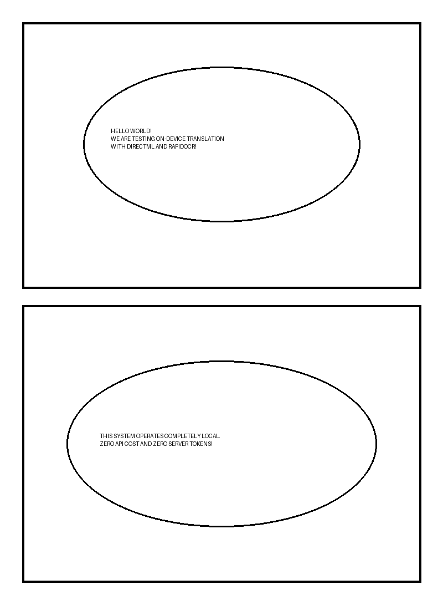

Page 1 / 1

Trang thử nghiệm trực tiếp InkShift Chrome Extension với Engine dịch On-Device (DirectML + RapidOCR/Manga-OCR).
Mở popup InkShift trên thanh công cụ → Chọn Local DirectML (On-Device) → Bấm Re-scan Current Page.
